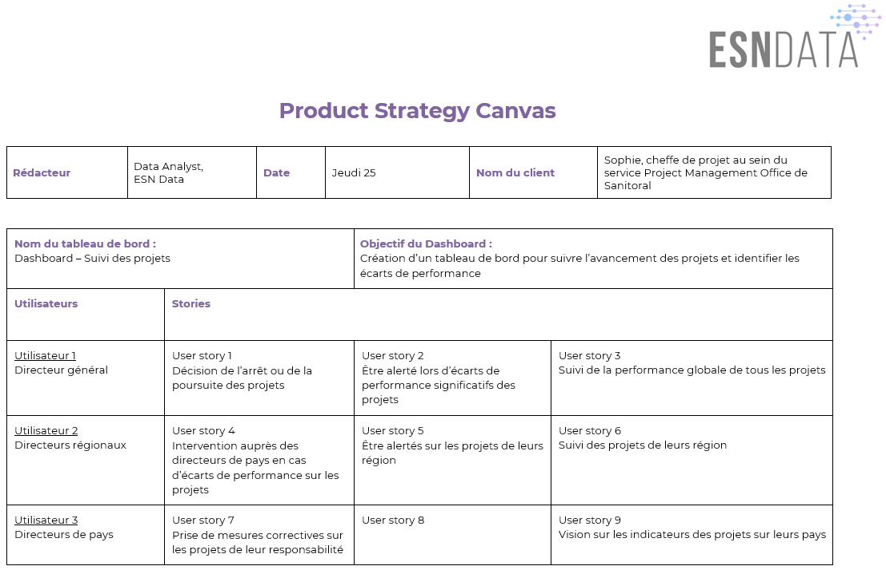
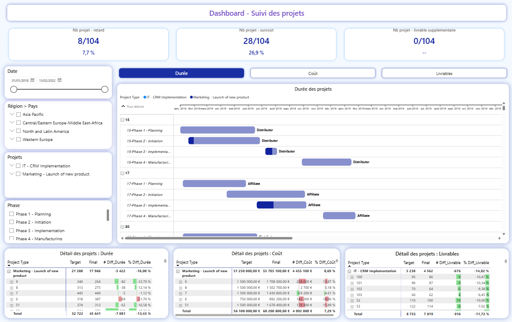
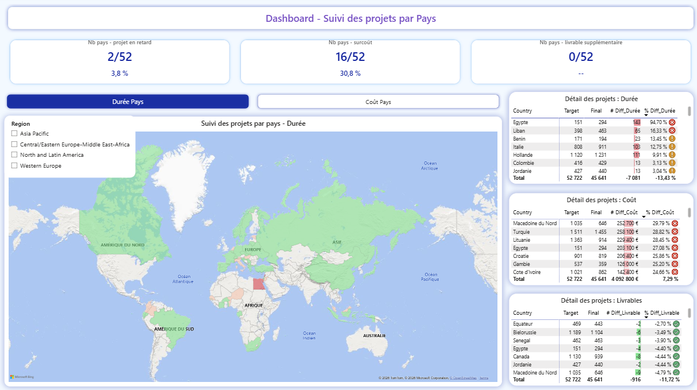

- 3niveaux de décision servis par un même outil
- 15 %seuil d'alerte sur les écarts
- 5pages de rapport reliées par signets
01 Contexte & besoin métier
Besoin : repérer les projets en difficulté (retard, surcoût, livrables non conformes) et alerter, pour que chaque niveau hiérarchique agisse dans son périmètre.
Profils d'utilisateurs
- Le directeur général décide de poursuivre ou d'arrêter un projet, veut être alerté des écarts significatifs et suivre la performance globale.
- Les directeurs régionaux interviennent auprès des directeurs de pays en cas de dérive et suivent les projets de leur région.
- Les directeurs de pays prennent les mesures correctives sur les projets dont ils ont la responsabilité.

Pourquoi identifier les profils
Trois profils veulent la même information à trois échelles différentes. Identifier les profils évite de construire un rapport unique.
02 Données
Données de suivi de projet articulant systématiquement une valeur planifiée et une valeur réalisée : durées, coûts, livrables, dates, par identifiant de projet, phase, type et localisation. Un référentiel de profils pays complète l'ensemble.
Qualité et limites
- La donnée est déclarative. Elle est saisie par les équipes projet ; un retard non déclaré reste invisible dans le tableau de bord.
- Les livrables sont hétérogènes d'un type de projet à l'autre, ce qui limite la comparaison directe entre projets de nature différente.
03 Démarche
-
Modéliser autour du couple planifié / réalisé
Le modèle sépare les tables de planification des tables de réalisation (coûts, durées, livrables), reliées aux dimensions projet, localisation et type. Une table dédiée regroupe l'ensemble des mesures calculées.
-
Mesurer l'écart en valeur et en pourcentage
Pour chacune des trois dimensions suivies, deux mesures ont été construites : l'écart absolu et l'écart relatif entre planifié et réalisé.
Pourquoi ce choix
Les deux lectures sont nécessaires et ne disent pas la même chose. Un surcoût de 50 k€ représente une dérive de 100 % sur un projet de 50 k€ et de 1 % sur un projet de 5 M€. Le pourcentage mesure la maîtrise du projet, la valeur absolue mesure l'impact financier.
Un directeur de pays a besoin du premier pour savoir si son équipe dérape ; un directeur général a besoin du second pour savoir où se joue le risque budgétaire.
-
Fixer un seuil d'alerte à 15 %
Chaque écart supérieur à 15 % déclenche une alerte, puis on compte les projets et les pays concernés.
Pourquoi un seuil
Sans seuil, chacun juge à sa façon si un écart est grave. Un seuil clair donne la même règle à tout le monde.
La valeur de 15 % est fixée par le commanditaire et peut être ajustée selon le type de projet.
-
Compter les pays autant que les projets
Des mesures dédiées dénombrent les pays en retard, en surcoût ou présentant un livrable supplémentaire, en parallèle des compteurs par projet.
Pourquoi ce choix
Dix projets en retard concentrés sur un seul pays relèvent d'un problème local : une équipe, un contexte réglementaire, un fournisseur. Dix projets en retard répartis sur dix pays relèvent d'un problème de méthode.
-
Cinq onglets, un besoin défini
Suivi par région, suivi par région et pays, suivi détaillé des projets, étapes pour la mise à jour des données et canevas de cadrage. Cartes géographiques, tableaux croisés, cartes d'indicateurs et diagrammes de Gantt personnalisés composent les vues.
Pourquoi des signets plutôt que des filtres
Les signets mémorisent un état complet du rapport et permettent de naviguer d'un clic entre des vues préconfigurées. L'utilisateur n'a pas à reconstruire une combinaison de filtres.

04 Résultats & impact
Le tableau de bord condense l'état du portefeuille en quelques compteurs de synthèse : nombre de projets et de pays en retard, en surcoût, ou présentant un livrable supplémentaire.

Ce que l'outil change
- Les projets en dérive se repèrent tout de suite, sans parcourir chaque ligne.
- La carte montre les zones à traiter en premier, et aide à distinguer un problème local d'un problème général.
- Chaque niveau hiérarchique a sa vue. Les neuf besoins recensés au cadrage trouvent chacun leur réponse dans une page du rapport.
- Les livrables en plus sont suivis comme un écart, car ils coûtent du budget et du temps non prévus.
Recommandations
- Organiser une revue régulière avec le tableau de bord : sans rendez-vous régulier, l'outil n'est consulté qu'en cas de crise.
- Ajuster le seuil par type de projet. 15 % sur un projet d'infrastructure et 15 % sur une mission courte n'ont pas la même signification.
- Fiabiliser la saisie à la source : c'est le principal levier de qualité, et il relève de l'organisation plus que de la technique.
05 Limites & prochaines pistes
L'outil ne vaut que ce que vaut la donnée saisie. Un tableau de bord de pilotage alimenté irrégulièrement fausse les résultats.
Le suivi constate les écarts survenus ; il ne les anticipe pas. Un projet qui va déraper le mois prochain apparaît encore conforme.
Le seuil unique est une simplification. Il traite de la même manière des projets de nature et de durée très différentes.
Prochaines pistes
- Paramétrer les seuils par type de projet plutôt que d'appliquer une valeur unique.
- Automatiser l'alimentation depuis l'outil de gestion de projet pour supprimer la ressaisie et son délai.
- Mettre en place des alertes poussées vers les directeurs concernés, plutôt que d'attendre qu'ils ouvrent le rapport.